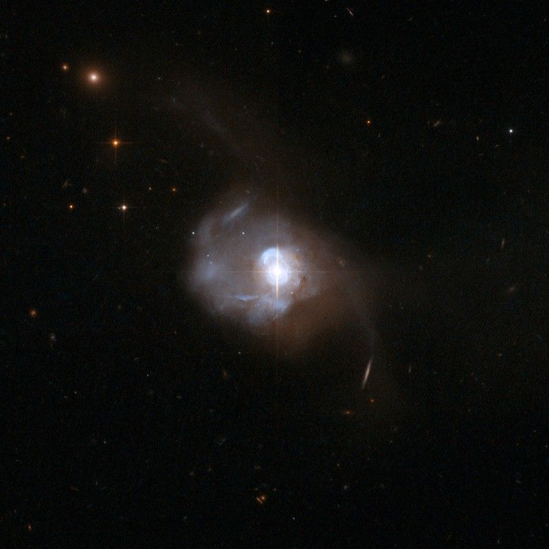

Galaxies
A galaxy is a system of stars, stellar remnants, interstellar gas, dust, and dark matter bound together by gravity.


Galaxies, averaging an estimated 100 million stars, range in size from dwarfs with less than a thousand stars, to the largest galaxies known – supergiants with one hundred trillion stars, each orbiting its galaxy's centre of mass. Most of the mass in a typical galaxy is in the form of dark matter, with only a few per cent of that mass visible in the form of stars and nebulae. Supermassive black holes are a common feature at the centres of galaxies.